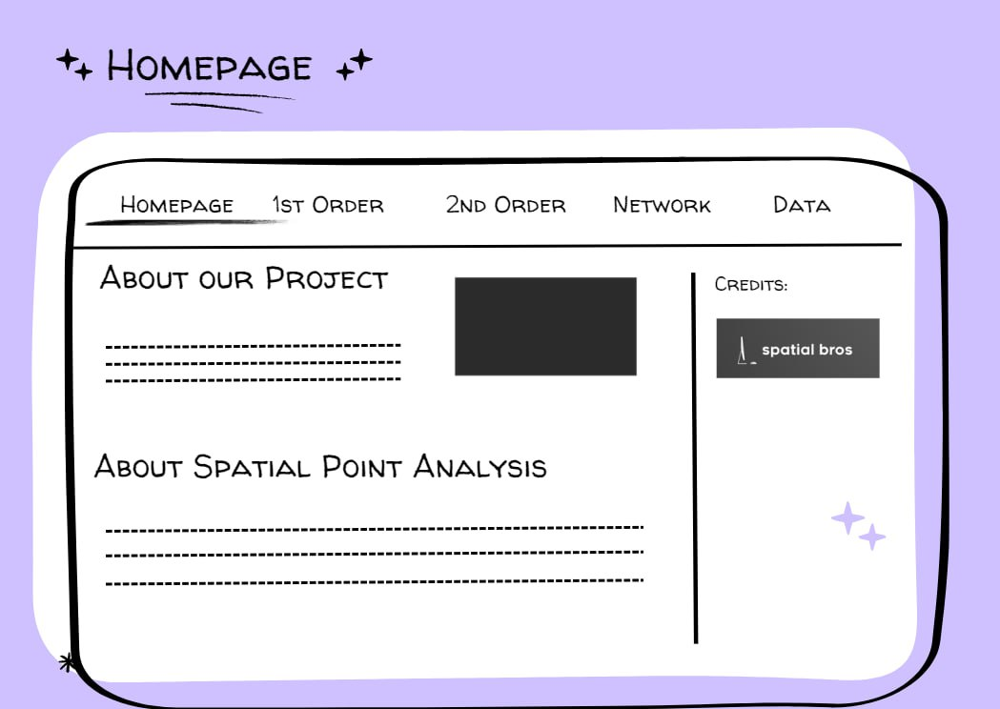
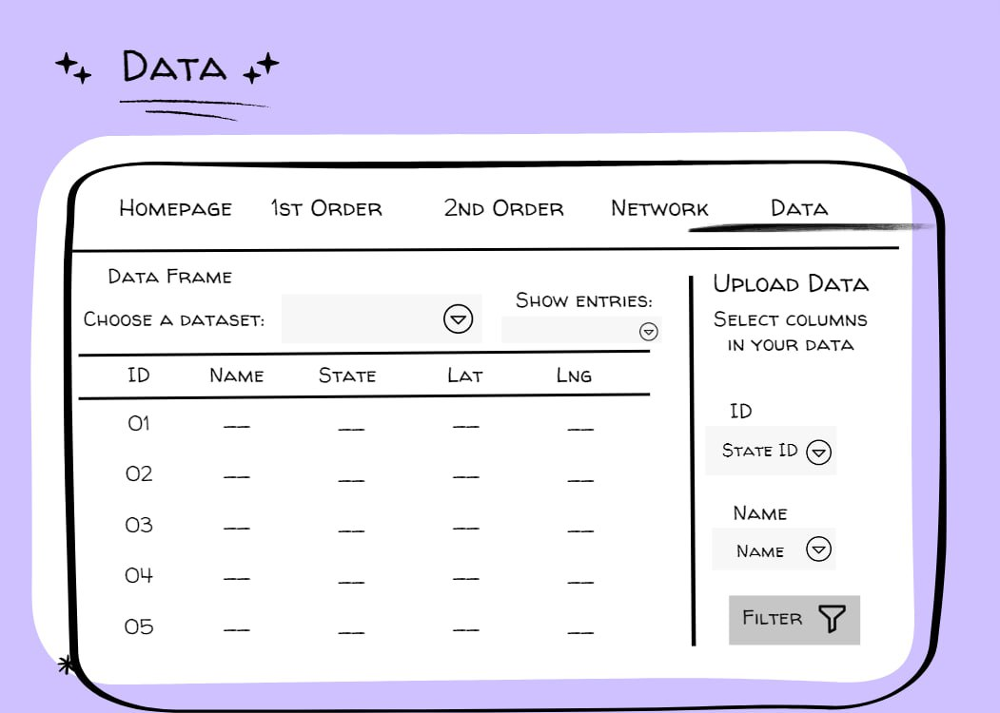

Theme: Point Pattern Analysis
1 Abstract
The Spatial Bros is created to assist non-technical savvy users in performing geographical point pattern analysis. Our application will assist users with 2 kinds of analysis as shown:
Spatial Points Analysis
Network Constraint Spatial Point
Geographical Accessibility
For each of the analyses, the application will provide users with kernel density maps, Geographical Accessibility maps and perform types of hypothesis testing to allow users to generate insights towards statistical conclusions on the distribution of spatial points along networks.
2 Problems & Motivation
In today’s technological advancing world, there are many interesting spatial data sources that exist in the forms of Geospatial and Aspatial format. Geospatial data is the foundation based on the foundation of geographical boundary locations and Aspatial data are the observations recorded that can be used to generate derive insights.
Despite that, there are not many people who are knowledgeable and trained to perform such analysis. Without the fundamental knowledge and appropriate training, any results based on the analysis performed could be inaccurate.
Hence, our group’s main focus is to perform our analysis and develop a web-based geospatial tool using R Shiny with regards to Point Pattern Analysis particularly on Network-Constrained Point Pattern Analysis (NCPPA) and Geographical Accessibility (GA). We hope this application can empower and educate users on NCPPA and GA and conduct the analysis they want regardless of their technical expertise to gain further insights from geospatial data.
3 Project Objectives
Throughout the development of this project, our group would like to perform our analysis and develop an analytical application that allow users to:
Better understand the capabilities of Network-Constrained Point Pattern Analysis
Better understanding of Geographical Accessibility
Conduct Network-Constrained Point Pattern Analysis density estimation (NetKDE) and (G, K) function analysis
Ability to generate insights based on the above analysis for any decision making
4 Our Approach & Methodology
4.1 Data Preparation
To source and assemble data from various sources out there
Importing the Spatial Data (Geospatial and Aspatial)
Data Wrangling
Generate Origin-Destination (OD) Matrix using Spatial Points and Networks
4.2 Exploratory Data Analysis
Visualise and examine the distribution of spatial pointers
Examine any anomalies and outliers in the dataset sourced
Further Data Wrangling (where necessary)
4.3 Network Constrained Point Pattern Analysis
Network Kernel Density Estimation - To explore the intensity of points along network
G and K function - To identify any potential clustering patterns, random distributions, even or uneven distributions of patterns
4.4 Geographical Accessibility
Tidying the distance matrix by using ODMatrix
To identify the accessibility of origins to destinations
Visualising accessibility using methods such as Hansen, KD2SFCA and Spatial Accessibility Measure (SAM)
6 Story Board
6.1 Home Page

6.2 Network KDE

6.3 Network Statistical Function

6.4 1st Order KDE

6.5 1st Order Stat Function

6.6 2nd Order KDE

6.7 2nd Order Stat Function

6.8 Data

7 Data Sources
Our data sources includes datasets from Australia Bureau of Statistics, City of Melbourne Open Data and Data Vic (State Government of Victoria) due to its large and wide range of datasets available for exploration and analysis.
With the inclusion of three different Network datasets in Melbourne and various Spatial Points datasets, we hope to allow users to understand and gain further insight of the use cases of Network-Constrained Spatial Points Analysis and Geographical Accessibility along different networks such as Pedestrian, Roads and Tram Networks.
For example, users could select health services and understand more about geographical accessibility of health services across Melbourne by Road.
They could also select and see accessibility of drinking fountains by pedestrian paths, which could drive further understanding about the distribution of drinking fountains across the city and possibly push for more water fountains to reduce the use of disposable water bottles to be more sustainable.
8 Application Architecture

9 Timeline

10 References
- Dr Kam Tin Seong - Course Website and R for Geospatial Data Science and Analytics textbook
- Yikang Rui, Zaigui Yang, Tianlu Qian, Shoaib Khalid, Nan Xia & Jiechen Wang - Network-constrained and category-based point pattern analysis for Suguo retail stores in Nanjing, China
- Alexander Li, Mengyang Liu, Aurimas Racas, Tejas Santanam, Junaid Syed, Przemyslaw Zientala - Ease and Equity of Point of Interest Accessibility via Public Transit in the U.S
- Jan Burdziej - Using hexagonal grids and network analysis for spatial accessibility assessment in urban environments – a case study of public amenities in Toruń